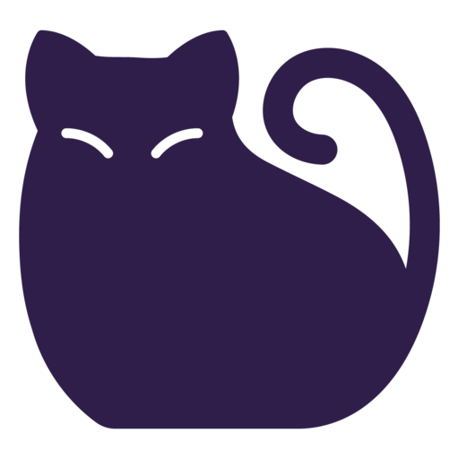

박현선

고양이 (학명: Felis silvestris catus)는 식육목 고양이과에 속하는 포유류 동물이다. 일반적으로 "고양이"라 함은 인간에게 길들여진 집고양이를 말한다. 들고양이(wild cat)는 약 10만 년에서 7만 년 전부터 존재했다. 2007년 기준으로 최근의 연구에 따르면 길들여진 고양이의 기원은 약 1만 년 전 근동지방에서 스스로 숲 속을 나와 사람들이 모여사는 마을에 대담하게 정착하여 길들여진 5마리 정도의 아프리카들고양이(학명: Felis lybica)로 추측된다.
| 시기 | 생김새 | 특징 |
| 출생~2주 |  |
갓 태어난 새끼고양이는 보이지도 들리지도 않고, 오직 후각만 발달해있다. 이때의 몸무게는 약 110g정도이다. 출생 후 2주부터 눈을 뜨고 청각이 발달한다. 이 시기가 고양이의 사회화에 중요한 시기이다. |
|---|---|---|
| 3~4주 |  |
어미의 교육 아래 다양한 경험을 하고 배우는 시기이다. 4주 이후가 되면 자유롭게 뛰어다닐 수 있으며 배변훈련과 그루밍을 시작한다. |
| 2개월 |  |
8~10주차가 되면 어미의 곁을 떠날 수 있는 시기이다. 유치가 완전히 자리잡아 이유식이나 사료를 먹을 수 있으며, 수컷들이 암컷보다 몸무게가 늘기 시작한다. |
| 3~5개월 |  |
12주 이후부터 눈색깔의 변화와 이갈이가 시작되는 신체변화의 시기이다. 매우 활발하며 호기심과 장난기가 가득하다. |
| 6~8개월 |  |
고양이마다 발육의 차이는 있지만 수컷은 4개월부터, 암컷은 7개월 이후부터 중성화수술이 가능하다. 6개월이면 젖니가 빠지고 영구치가 나는 시기이다. 성장이 완료되면서 눈에 띄는 성장이 나타나지 않는다. |
| 1년 |  |
몸이 다 자라고 성적으로 완벽히 성숙해진 성묘가 된다. 중성화수술을 하지 않은 암컷은 1년에 3~4번 발정기가 오며, 임신이 가능하다. 수컷은 14개월이 되면 성적으로 성숙해진다. |
| 6세~13세 |  |
노년기에 접어드는 시기로, 병에 걸리는 일도 많아지고 운동량도 줄어들게 된다. |